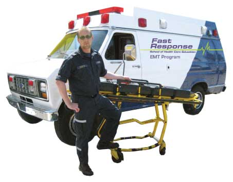

(510) 849-4009
|  |
|
Fast Response is dedicated to providing the highest quality, comprehensive and realistic EMT training program in the Bay Area.
Our 4-week*, intensive EMT program is enriched to provide the skills needed to obtain employment quickly. Unlike other EMT programs, you will be trained using the Fast Response ambulance, our gurneys, and the latest EMS equipment. All of our dedicated instructors are experienced Paramedics and EMTs with extensive field experience. We are dedicated to preparing you for a career in a pre-hospital care environment.If you graduate with honors from Fast Response, you will be scheduled for a job interview with an established and rapidly expanding ambulance service.
As an EMT, your employment opportunities may include ED (ER) Tech, Firefighter, Ambulance Attendant or part of a Search and Rescue Team, to name just a few. With your EMT certification, you have taken the first step toward a well-paying and rewarding career as a medical professional.
or Click Here for more information!
Marin County
(415) 575-0911
(925) 945-6666
*An ambulance ride along and a hospital ER clinical (both included in tuition) are also required